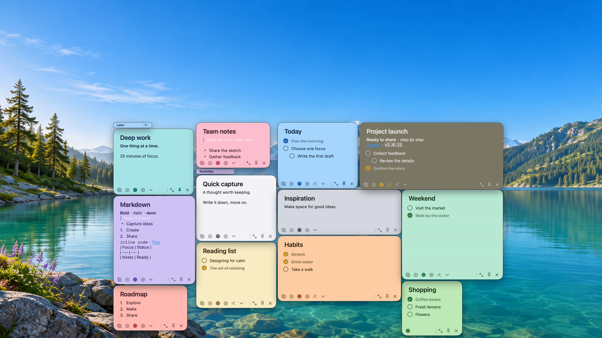
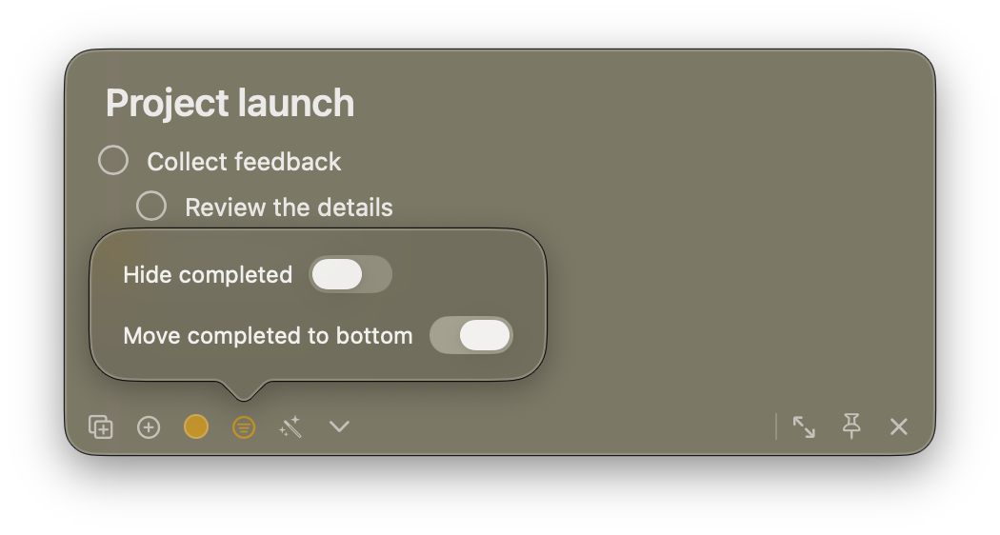
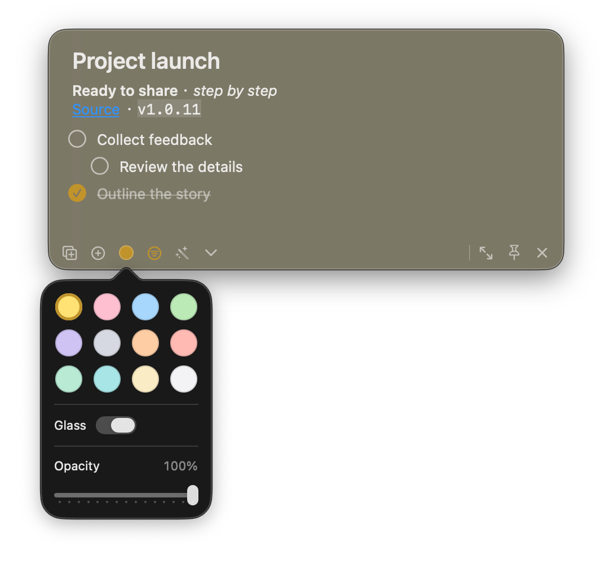

搜索与管理
通过菜单栏和搜索面板快速找到便签，管理、打开或关闭需要的内容。
一张张轻巧的桌面便签，让灵感、计划和待办自然融入你的工作空间。打开就写，重要的事始终在手边。

从一条临时想法到一整个项目，把内容拆成恰到好处的便签，放在你需要它的地方。
便签拥有独立窗口。随心移动、调整大小、置顶，或让它出现在所有空间。双击收起成轻巧标题栏，需要时再展开；靠近屏幕底部时还可吸附。
写下 Markdown，创建清单，把大任务拆成小步骤。拖动任务调整顺序和层级；完成、隐藏或将已完成项目移到底部，让下一步始终清楚。

用颜色区分计划、灵感与生活琐事。选择纯色或毛玻璃背景、调整不透明度，让每张便签自然地融入桌面。

开启剪贴板收集时，复制的文字和图片会自动整理到指定便签。临时的片段、稍后的参考，都能在桌面上找到。
一段文字、一张图片，
都可以成为下一次灵感的起点。
把记录、整理和回顾放在一起。简单的界面之下，常用的工具都在手边。
通过菜单栏和搜索面板快速找到便签，管理、打开或关闭需要的内容。
将图片粘贴到便签或任务中，裁剪需要的部分，并打开查看。
为需要记住的事添加提醒，让想法在合适的时候回到眼前。
用键盘新建、操作便签；根据自己的习惯调整快捷键和登录启动设置。
支持 Markdown、纯文本和 JSON；用 JSON 备份更完整的便签内容与外观。
需要时将复制的文字和图片收集到指定便签，在应用内管理这一功能。
记住便签位置，在显示器连接变化后尽量恢复到合适的位置。
选择中文、英文，或跟随系统语言，使用熟悉的表达方式。
便签和任务保存在 Mac 本地的 SQLite 数据库中，无需注册账号。
在设置中开启 MCP，并按引导配置兼容的客户端。让工具在你的授权下读取和整理便签，变更会反映到应用中。
了解使用方式 ↗免费、开源，为 macOS 原生打造。下载预构建版本，或从源码开始。
适用于 macOS 14 或更高版本，通用构建支持 Apple Silicon 与 Intel。
是的。Tico 是免费开源软件，采用 MIT 许可证。你可以查看源码、提交问题或参与改进。
正式版在 Mac 本地保存数据，沿用 Tic 的应用标识和数据目录。开发版使用独立目录。建议定期导出备份。
当前发行包要求 macOS 14 或更高版本，支持 Apple Silicon 和 Intel。请查看发行页面的具体说明。
当前 1.0.11 版本未启用上游文件夹同步和自动更新。请手动备份，并在 GitHub Releases 查看新版本。
可以导出 Markdown、纯文本或 JSON。JSON 更适合完整备份；纯文本不包含图片和外观。
在应用设置中按需开启 MCP，按界面提示为兼容的客户端配置。MCP 默认关闭。
从一张便签开始，让下一件重要的事留在眼前。